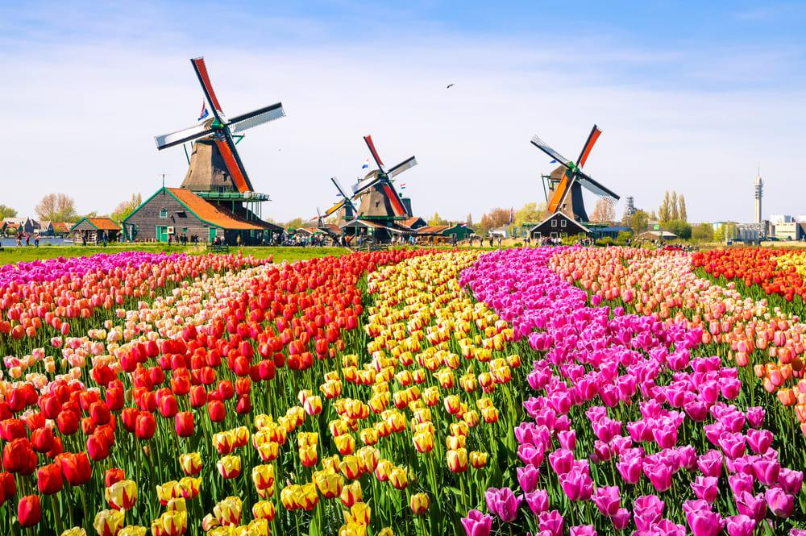
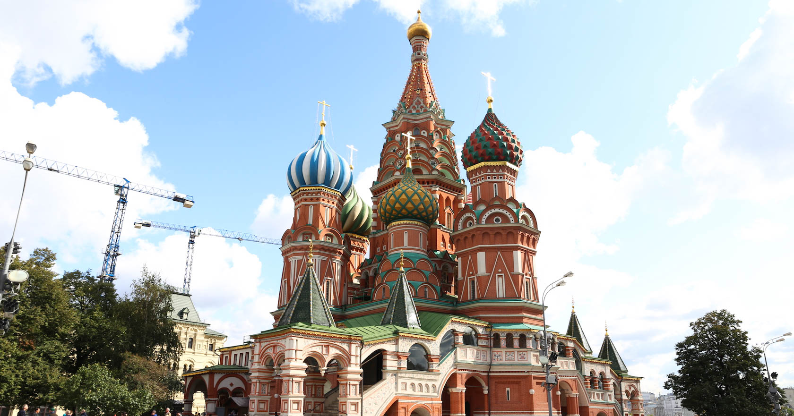

Simplificando, 'viagem' refere-se ao movimento de pessoas entre localizações geográficas distantes. As viagens podem ocorrer por vários motivos, incluindo relaxamento e rejuvenescimento, exploração, negócios e visitas a outras pessoas.
Tóquio, é a capital do Japão e uma das 47 prefeituras do país. Situa-se em Honshu, a maior ilha do arquipélago.
Embora seja considerada um dos maiores centros financeiros do mundo (ao lado de Nova Iorque e Londres[3]), e uma "Cidade Global Alfa+", ela não é, tecnicamente, uma cidade. Não há no Japão uma cidade chamada "Tóquio". Na verdade, Tóquio é designada como uma metrópole (都 to?), similar a uma prefeitura do Japão (県 ken?), e é constituída por 23 bairros (区 ku?), 26 cidades primárias (市 shi?), cinco cidades secundárias (町 cho ou machi?) e oito vilas diferentes (村 son ou mura?). Cada uma delas possui um governo que opera no nível regional. Também fazem parte de seu território pequenas ilhas no Oceano Pacífico, localizadas a cerca de mil quilômetros ao sul.
Tokyo, Japão
Voltar ao TopoOs Países Baixos, conhecidos informalmente como Holanda, é uma nação constituinte do Reino dos Países Baixos localizada na Europa ocidental. O país é uma monarquia constitucional parlamentar democrática banhada pelo mar do Norte a norte e a oeste, que faz fronteira com a Bélgica a sul e com a Alemanha a leste.
Holanda
Voltar ao TopoA Alemanha é um país situado na Europa Ocidental com uma paisagem de florestas, rios, cordilheiras e praias do Mar do Norte. A nação tem mais de 2 milênios de história. Berlim, a capital, abriga cenários artísticos e de vida noturna, o Portão de Brandemburgo e muitos locais relacionados à Segunda Guerra Mundial. Munique é conhecida pela Oktoberfest e pelos beer halls, entre eles o Hofbräuhaus, do século XVI. Frankfurt, com seus arranha-céus, abriga o Banco Central Europeu.

Alemanha
Voltar ao TopoMoscou, situada às margens do rio de mesmo nome, no oeste da Rússia, é a capital cosmopolita do país. Em seu núcleo histórico está localizado o Kremlin, um complexo que abriga a residência do presidente e tesouros czaristas no Palácio do Arsenal. Do lado de fora de suas paredes fica a Praça Vermelha, centro simbólico da Rússia, que conta com o Mausoléu de Lenin, a abrangente coleção do Museu Histórico do Estado e a Catedral de São Basílio, conhecida pelas cúpulas coloridas em forma de cebola.
Moscou, Rússia
Voltar ao Topo